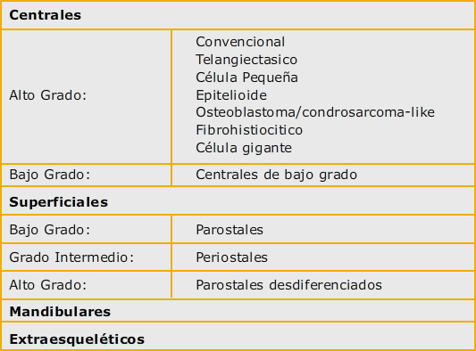
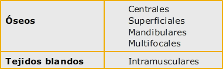
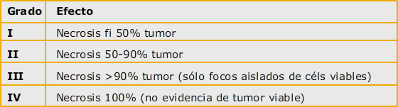

Tumores óseos

3.1 Osteosarcomas
Tumores óseos del adulto
Los tumores primarios del hueso son poco frecuentes en el adulto, con la excepción de aquellos de origen hematológico, como el mieloma múltiple y el linfoma. En este módulo se tratarán los sarcomas óseos de mayor incidencia:
Osteosarcoma
Sarcoma de Ewing/Tumor neuroectodérmico periférico
Condrosarcoma
Los dos primeros se ven sobre todo en la infancia, y de forma más infrecuente en el adulto, sobre todo en edades jóvenes. De hecho, constituyen la quinta causa de cáncer en los jóvenes entre 15 y 19 años.
Otros tumores óseos primarios más infrecuentes son el cordoma, fibrosarcoma, tumor de células gigantes y angiosarcoma.
Epidemiología
Osteosarcoma
El Osteosarcoma es el tumor óseo maligno más frecuente en la infancia y adolescencia, y se caracteriza por la producción de osteoide o hueso inmaduro por las células neoplásicas.
La supervivencia de los pacientes con osteosarcoma era pobre cuando la cirugía era la única arma terapéutica disponible. Se encontraba entre un 10-20% a los 5 años.
La introducción de los esquemas modernos de quimioterapia, en combinación con las modernas técnicas de cirugía, han mejorado estos resultados.
En la actualidad, se consigue la conservación de la extremidad en la mayoría de los casos, y la supervivencia a largo plazo es cercana al 60% para el osteosarcoma localizado y al 25% para el osteosarcoma metastático al diagnóstico.
El osteosarcoma es el tumor óseo primario maligno más frecuente, cuando se excluyen los tumores hematopoyéticos óseos. En Estados Unidos, se diagnostican aproximadamente 900 casos nuevos al año. El osteosarcoma presenta una distribución por edades de tipo bimodal, con un pico de incidencia máxima en la adolescencia y otro en la edad adulta, por encima de los 65 años. La edad media de presentación se encuentra entre los 13 y los 16 años, y es extremadamente raro antes de los 5 años. Afecta con mayor frecuencia a los varones que a las mujeres, con una ratio de 1.6:1. La incidencia de osteosarcoma es ligeramente superior en la población afroamericana.
La mayoría de los casos de osteosarcoma son esporádicos, aunque existen algunos casos en los que existe predisposición hereditaria. Varios factores etiológicos podrían estar implicados en el desarrollo de esta enfermedad. La exposición previa a la radiación es un factor de riesgo bien conocido. De hecho, el osteosarcoma es el segundo tumor primario más frecuente durante los años posteriores al tratamiento de un tumor pediátrico.
El tiempo de latencia suele encontrarse entre los 4 y 20 años. La exposición previa a agentes alquilantes parece potenciar el riesgo de osteosarcoma secundario.
La enfermedad de Paget, caracterizada por una tasa de recambio óseo acelerada, se encuentra asociada a la mayoría de osteosarcomas que se presentan en pacientes mayores de 40 años. No obstante, menos del 1% de pacientes con enfermedad de Paget lo desarrollarán. Histológicamente es indistinguible de otros osteosarcomas, pero con frecuencia afecta a múltiples huesos y el pronóstico acostumbra a ser sombrío.
En algunos casos, sin embargo, existen alteraciones genéticas que predisponen al desarrollo del osteosarcoma.
El retinoblastoma hereditario, caracterizado por la presencia de mutaciones germinales del gen del retinoblastoma, se asocia a un riesgo aumentado de aparición de osteoarcoma y sarcomas de partes blandas.
El síndrome de Li-Fraumeni, asociado a la presencia de mutaciones germinales de p53, se caracteriza por la aparición de diferentes tipos de cáncer en los miembros de una familia, como el cáncer de mama, los sarcomas óseos y de partes blandas, tumores cerebrales y leucemias.
El síndrome de Rothmund-Thomson, de herencia autosómica recesiva, se caracteriza por atrofia cutánea, cataratas, baja estatura y una incidencia muy elevada de osteosarcoma. Este síndrome se ha relacionado con la mutación del gen supresor RECQL4.
Otros miembros de la familia de genes RECQ están mutados en el síndrome de Bloom y en el de Werner, ambos asociados también a un riesgo aumentado de osteosarcoma.
Patología y biología molecular del osteosarcoma
Clasificación anatamopatológica
El osteosarcoma se caracteriza por la presencia de un estroma maligno de estirpe sarcomatosa asociado a la producción de osteoide por las células malignas. Histológicamente sus variantes más frecuentes son la osteoblástica, condroblástica y fibroblástica, según sea su matriz extracelular. El osteosarcoma, no obstante, se distingue del condrosarcoma y del fibrosarcoma por la presencia de osteoide neoformado, necesaria para su diagnóstico.
Los osteosarcomas se originan en la cavidad medular metafisaria de los huesos largos en crecimiento y, menos frecuentemente, en la superficie ósea, confinados al córtex y sin infiltración de la médula ósea. Los osteosarcomas que se originan en la superficie ósea suelen ser de bajo grado y generalmente aparecen en pacientes mayores de lo habitual.
Para la clasificación del osteosarcoma se han utilizado diferentes clasificaciones, teniendo en cuenta el tipo de matriz extracelular, el grado de diferenciación histológica y la localización anatómica (Tabla 1 y Tabla 2).
Tabla 1
Clasificación Osteosarcomas según Tipo Histológico
Tabla 2
Clasificación Osteosarcomas según localización Anatómica
Asimismo, existen distintas clasificaciones para la gradación histológica. La clasificación propuesta por el grupo de la Clínica Mayo se basa en el esquema de Broders que divide el grado tumoral de 1 a 4 en función del porcentaje de anaplasia hallado (de < 25% al 100%).
Teniendo en cuenta que la atipia celular es el factor más importante para la gradación histológica, cualquier foco de anaplasia hallado en una muestra de biopsia representa por si mismo un Grado 4. En la práctica clínica, a la mayoría de osteosarcomas centrales convencionales se les asigna un Grado 3-4.
A continuación, se describen las variantes de mayor importancia:
Osteosarcomas Centrales de Alto Grado
Osteosarcomas Centrales de Bajo Grado
Osteosarcomas Superficiales
Otras variantes de Osteosarcoma
OSTEOSARCOMAS CENTRALES DE ALTO GRADO
Osteosarcoma convencional
Constituye el tipo más frecuente de osteosarcoma. El requerimiento imprescindible para su diagnóstico es la producción de osteoide por las células tumorales. Microscópicamente estas células pueden ser alargadas o poliédricas, y se localizan en los espacios interseptales de la médula ósea. Se caracterizan por un núcleo pleomórfico e hipercromático, con abundantes mitosis. La matriz extracelular puede ser ósea, cartilaginosa y fibrosa. Dependiendo del tipo predominante de esta matriz se clasificarán como: osteosarcoma osteoblástico, condroblástico y fibroblástico. Existe otra variante denominada osteosarcoma esclerosante que se caracteriza por la producción excesiva de matriz ósea de forma que el componente tumoral es difícil de identificar en una muestra pequeña de biopsia.
Osteosarcoma Telangiectásico
Es un tipo de osteosarcoma que se asemeja radiológica e histológicamente a un quiste óseo aneurismático, produciendo una destrucción ósea radiolúcida con reacción periostal asociada. Se caracteriza por la presencia de múltiples sinusoides sanguíneos, polimorfismo nuclear evidente y alta tasa mitótica, pudiendo contener focos de células gigantes similares a los osteoclastos.
Osteosarcoma de Célula Pequeña
Es una variante histológica muy rara, que constituye el 1-2% de todos los osteosarcomas, y que puede confundirse fácilmente con el sarcoma de Ewing y los tumores neuroectodérmicos (PNET). Las células son pequeñas y tienen un núcleo redondo e hipercromático y con escaso pleomorfismo nuclear, típico de los osteosarcomas de alto grado. La producción de osteoide por las células tumorales es la característica que define a este tipo de osteosarcoma y lo diferencia del sarcoma de Ewing. El perfil immunohistoquímico puede asemejarse al de los sarcomas de Ewing/PNET, con una positividad para el marcador de membrana CD99 típico en los tumores de Ewing, condrosarcoma mesenquimal y tumores hematopoyéticos primitivos. La traslocación entre los cromosomas 11 y 22 (típica para los tumores de Ewing/PNET) también se ha descrito en algunos casos de osteosarcoma de célula pequeña.
Osteosarcoma Mandibular
Los osteosarcomas mandibulares o maxilares se caracterizan por la producción de matriz cartilaginosa, aunque también están descritas la producción de matriz osea o fibroblástica. Radiológicamente se va a presentar cómo una lesión radiolúcida o mixta con áreas más densas. Aunque se trata de sarcomas de alto grado, un pequeño porcentaje de pacientes van a desarrollar metástasis.
OSTEOSARCOMAS CENTRALES DE BAJO GRADO
Osteosarcoma central de bajo grado
Variante muy inusual de osteosarcoma. Radiológicamente se asemeja a la displasia fibrosa u otras lesiones benignas, con imágenes de esclerosis, reacción periostal o discontinuidad de la cortical. Histológicamente puede confundirse con un osteosarcoma parostal de bajo grado.
Aunque el tratamiento suele ser únicamente cirugía y tienen un mejor pronóstico, algunos pacientes pueden desarrollar un segundo osteosarcoma de alto grado.
OSTEOSARCOMAS SUPERFICIALES
Los osteosarcomas superficiales, denominados también yuxtacorticales, asientan en el periostio o el córtex óseo, sin infiltración (o bien mínima) de la médula ósea. Afectan generalmente a pacientes entre la tercera y cuarta década de la vida y generalmente son de bajo grado con tendencia a la recurrencia a nivel local y con baja capacidad para la diseminación a distancia. No obstante, aproximadamente un 10% de estos tumores son de alto grado. Existen diferentes tipos de osteosarcomas superficiales:
Osteosarcoma parostal
Subtipo más frecuente de sarcoma superficial, con una incidencia que representa aproximadamente 1 de cada 20 osteosarcomas. La cara posterior del tercio distal del fémur constituye la localización más frecuente. Clínicamente suele presentarse como una masa dolorosa que produce impotencia funcional, y radiológicamente se observa una masa densa a nivel central, con una línea radiolúcida incompleta que separa la masa esclerótica del córtex subyacente sin invasión del canal medular. Histológicamente se caracterizan por la presencia de hileras paralelas de las trabeculaciones óseas similares a las observadas en las reacciones periósticas. Éstos espacios intertrabeculares contienen tejido fibroso y ocasionalmente se objetiva osteoide inmaduro o matriz ósea. El diagnóstico diferencial debe hacerse con los osteocondromas, miositis osificante y el osteosarcoma convencional. Afecta con frecuencia a pacientes de edad superior al osteosarcoma convencional, entre 20 y 40 años, y su pronóstico tras resección quirúrgica exclusiva es mucho mejor que el del osteosarcoma convencional, con una tasa de curación cercana al 90%.
Osteosarcoma Periostal
Subtipo menos frecuente, compuesto básicamente por matriz cartilaginosa, que se originan en la superficie ósea entre el córtex y el periostio. La diáfisis tibial o femoral son las dos localizaciones más frecuentes. Se caracterizan por ser de grado histológico intermedio entre el grado 1 de los osteosarcomas parostales y los osteosarcomas convencionales de alto grado.
Osteosarcoma Yuxtacortical de alto grado
Se trata de un osteosarcoma de características similares al convencional, pero que se origina en la superficie del hueso en lugar de en la medular.
OTRAS VARIANTES DE OSTEOSARCOMA
Osteosarcoma Extraesquelético
Representa un 2% de los sarcomas de partes blandas. Suele afectar a pacientes entre la quinta-séptima década de la vida y con especial predilección por la localización a nivel de muslos seguido de las nalgas, extremidades superiores y retroperitoneo. Radiológicamente se muestra como una masa con mineralización en su interior e histológicamente puede contener todos los tipos histológicos de osteosarcoma descritos en los tumores que asientan sobre el hueso.
Osteosarcoma Multifocal
Forma rara de presentación, afecta múltiples huesos sincrónica o metacrónicamente. Aunque es difícil diferenciarlo de un osteosarcoma con metástasis óseas, todas las lesiones presentan características clínicas y radiológicas propias de tumor primario.
Histocitoma fibroso maligno del hueso
Aunque no se trata propiamente de un osteosarcoma, posee grandes similitudes, y desde el punto de vista terapéutico el manejo es idéntico y su pronóstico parecido. A nivel histológico, se diferencia del osteosarcoma por la ausencia de producción de osteoide por las células tumorales.
BIOLOGÍA MOLECULAR DEL OSTEOSARCOMA
En el osteosarcoma existe una compleja relación entre el desarrollo y progresión tumorales, y las alteraciones de genes supresores tumorales, oncogenes, y vías de señalización. P53 es un gen supresor tumoral alterado en hasta el 50% de los casos de osteosarcoma mediante pérdidas alélicas y mutaciones puntuales.
Estas mutaciones se hallan presentes en el tumor antes de su diseminación metastásica y son por tanto mutaciones relativamente tempranas en el proceso de progresión tumoral.
Una evidencia clínica que subraya la relación entre p53 y el osteosarcoma es que los pacientes con síndrome de Li-Fraumeni (mutaciones de p53 en la línea germinal) tienen una gran tendencia a desarrollar osteosarcomas. Una molécula que regula la estabilidad de p53 es MDM2. Se han detectado amplificaciones de 12q13 (el locus de MDM2) en un número significativo de osteosarcomas; este hecho se asocia clínicamente a la progresión tumoral y a la presencia de metástasis, aunque no con la respuesta a la quimioterapia o la supervivencia.
Por ejemplo
Otro ejemplo de gen supresor tumoral es el retinoblastoma (RB1), cuya función en condiciones normales es clave para regular el paso de la fase G1 a la fase S del ciclo celular.
También existe una clara conexión clínica entre el gen RB1 y el osteosarcoma porque los pacientes con retinoblastoma hereditario, en los que ambas copias de RB1 están inactivadas, tienen una probabilidad hasta 1000 veces mayor de tener un osteosarcoma respecto a la población general. En los osteosarcomas esporádicos, hasta el 70% tienen mutaciones/deleciones del gen RB1.
Entre los proto-oncogenes, algunos estudios han documentado la presencia de amplificaciones de HER-2 en osteosarcomas; sin embargo su valor para predecir el pronóstico o la respuesta al tratamiento está muy en duda. En cuanto a los mediadores de señalización celular, los factores de transcripción Runx2 y Osterix son clave en la diferenciación osteoblástica.
Ciertos experimentos de laboratorio han revelado que la interacción física entre Runx2 y p27, una molécula que regula el ciclo celular a través de RB1, es interacción necesaria para la diferenciación osteoblástica.
Importante
Esta interacción está interrumpida en el osteosarcoma, lo que sugiere un papel importante para la vía Runx2-p27-Rb1 en el osteosarcoma. Está claro que hay un gran interés en el desarrollo de nuevas moléculas que puedan restaurar la señalización de Runx2 en el osteosarcoma.
DIAGNÓSTICO Y ESTADIFICACIÓN
Presentación clínica
El dolor acostumbra a ser el síntoma inicial de presentación. La aparición después de ejercicio físico o de un traumatismo es común en la edad de presentación de estos tumores. Generalmente suele iniciarse de forma insidiosa, progresiva y con el tiempo pasar a ser continuo, y asociarse a impotencia funcional, de forma que entre la aparición de síntomas y el diagnóstico pueden pasar semanas o meses. La presentación como fractura patológica es poco habitual.
La localización más frecuente se encuentra a nivel de las metáfisis de los huesos largos, siendo el fémur distal (40%), tibia proximal (20%) y húmero proximal (10%) las más frecuentes. El área de la rodilla representa hasta un 50% de todos los casos. En menos del 10% de los casos, se origina en el esqueleto axial, siendo la pelvis la localización más común.
Aproximadamente, un 15-20% de los pacientes presentan metástasis en el momento del diagnóstico. Sin embargo, tras tratamiento quirúrgico exclusivo, hasta un 80% de los pacientes con osteosarcoma localizado desarrollarán metástasis durante el seguimiento, hecho que hace presuponer la existencia de micrometástasis y enfermedad subclínica al diagnóstico.
Las metástasis se producen vía hematógena, siendo el pulmón la localización más frecuente, seguida del hueso y tejidos blandos.
La afectación ganglionar es rara ( < 10%). Es característica la aparición de "skip metastasis" (metástasis nodulares medulares dentro del mismo hueso, de pequeño tamaño, que no están en contigüidad con el tumor). Las metástasis pulmonares son, con frecuencia, asintomáticas hasta la existencia de una afectación avanzada.
La insuficiencia respiratoria secundaria a metástasis es la causa de fallecimiento más común en los pacientes que hoy en día fallecen a a consecuencia de la enfermedad.
DIAGNÓSTICO RADIOLÓGICO
El diagnóstico y estadificación local de los sarcomas óseos debe incluir radiografías del hueso afecto, incluyendo las articulaciones proximal y distal al mismo, y resonancia magnética (RM) de la región ósea afecta. Las radiografías, complementadas con la tomografía computerizada (CT) permiten establecer un diagnóstico de sospecha en la mayor parte de los casos.
Osteosarcoma convencional
Osteosarcoma telangiectásico
Osteosarcoma de bajo grado
Osteosarcoma de superficie o yuxtacorticales
Osteosarcoma paraostal
Osteosarcoma perióstico
Osteosarcoma de superficie de algo grado
Osteosarcoma convencional
El osteosarcoma convencional afecta predominantemente los huesos largos (70- 80% de los casos), especialmente la rodilla (50-55% de casos). El fémur es el hueso más frecuentemente afecto, seguido de la tibia y del húmero. La pelvis, peroné, macizo facial y columna vertebral se ven afectos con menor frecuencia, mientras la afectación del cráneo, clavícula, costillas, escápula, huesos del antebrazo y de las manos y pies es muy rara. Típicamente, el osteosarcoma convencional afecta la región metafisaria, con aproximadamente un 10% de casos de afectación diafisaria. La afectación secundaria de la epífisis, en pacientes con la placa fisaria abierta, es muy común; por el contrario, la afectación epifisaria primaria es excepcional.
Las radiografías permiten establecer el diagnóstico en un gran porcentaje de casos dado el aspecto característico de este tumor. El rasgo más específico del osteosarcoma son las calcificaciones densas, amorfas, de aspecto algodonoso, debidas a la calcifiación de la matriz osteoide producida por el tumor. La gran mayoría de casos, hasta un 90% según algunos autores, presentan, en mayor o menor medida, matriz osteoide calcificada. Aunque algunos casos pueden ser completamente blásticos, la mayoría combinan áreas blásticas y áreas líticas.
El osteosarcoma puramente lítico representa un pequeño porcentaje de casos. El componente lítico, que inicialmente se localiza en la cavidad medular del hueso afecto, suele afectar la cortical, adelgazándola sin expandir sus contornos, y destruyéndola completamente en algunas zonas de la lesión. La destrucción cortical se acompaña de reacción perióstica interrumpida, con varios patrones descritos (triángulo de Codman, reacción "en capas de cebolla", o "en rayos de sol") y masa de partes blandas.
La TC y la RM no suelen ser necesarias para establecer el diagnóstico, salvo en aquellas localizaciones anatómicas complejas como la pelvis o el macizo facial, o en casos de presentación atípica. Con los modernos TC multidetectores, que permiten obtener reconstrucciones multiplanares similares a las de la RM, ambas técnicas pueden emplearse para valorar la extensión tumoral y planificar el tratamiento, aunque la RM es la técnica de elección por su mayor resolución de contraste.
La TC tiene la ventaja de permiten valorar mejor pequeñas áreas de calcificación osteoide, evaluar mejor la destrucción cortical y es un método muy eficaz para guiar la biopsia percutánea de estas lesiones.
Por su parte, la RM permite una mejor diferenciación de los límites reales de la tumoración, especialmente tras la administración endovenosa de contraste paramagnético (gadolinio). La administración de contraste paramagnético, especialmente mediante estudios dinámicos, puede diferenciar la infiltración tumoral del edema óseo perilesional. El uso de contraste intravenoso proporciona también información vital sobre el porcentaje de áreas necróticas intratumorales, lo que permitirá valorar, como veremos más adelante, la eficacia del tratamiento quimioterápico neoadyuvante. La RM es también la técnica que delimita mejor la extensión tumoral a las partes blandas.
Osteosarcoma telangiectásico
El osteosarcoma telangiectásico es un subtipo histológico que representa entre un 2.5 y un 12% de todos los osteosarcomas. Histológicamente se caracteriza por grandes cavidades hemorrágicas o necróticas que forman, por definición, más del 90% de la lesión antes del tratamiento, acompañadas de células sarcomatosas de alto grado viables, en la periferia y en los septos de estas cavidades.
Estas características histológicas se traducen en su aspecto radiológico, en el que predomina la lisis, bien delimitada (patrón geográfico), que se acompaña de insuflación y destrucción de la cortical en las radiografías. La ausencia de calcificación osteoide significativa en las radiografías es uno de los rasgos definitorios de esta entidad para la mayoría de autores. En las radiografías, el diagnóstico diferencial debe establecerse con el quiste óseo aneurismático y con el tumor de células gigantes.La destrucción cortical explica que hasta un 60% de casos presenten fractura patológica al debut.
La TC y la RM demuestran las cavidades quístico-hemorrágicas, con frecuentes niveles líquido-líquido, que se acompañan de nódulos sólidos hipercaptantes de localización periférica. La detección de estos nódulos tumorales sólidos, junto a áreas de matriz osteoide calcificada, y de destrucción cortical con afectación de partes blandas mediante TC o RM permiten diferenciar de forma fiable el osteosarcoma telangiectásico del quiste óseo aneurismático.
Osteosarcoma de bajo grado
El osteosarcoma de bajo grado es un subtipo histológico infrecuente, que a diferencia del osteosarcoma convencional afecta por igual a ambos sexos. La mayoría de los pacientes son adultos jóvenes, y la distribución de las lesiones es similar a la del osteosarcoma convencional. Desde el punto de vista radiológico tiene una presentación variable, con una apariencia global de lesión benigna en las radiografías.
En la mayor parte de casos se trata de lesiones líticas, de gran tamaño, que contienen trabéculas gruesas e irregulares, o delgadas e incompletas. La presentación en forma de lesiones blásticas, o mixtas lítico-blásticas es menos frecuente. La TC o la RM permiten demostrar áreas focales de destrucción cortical o extensión a las partes blandas en la mayoría de casos, orientando hacia el carácter agresivo de la lesión.
Osteosarcoma de superficie o yuxtacorticales
Los osteosarcomas de superficie representan entre un 4 y un 10% del total de osteosarcomas. Este grupo viene definido por el origen tumoral fuera de la cavidad medular, en el periostio, e incluye los siguientes subtipos: paraostal, perióstico, y de superficie de alto grado. Las dos primeras variantes se caracterizan por su bajo grado histológico, lo que les confiere un mejor pronóstico.
Osteosarcoma Parostal
Este subtipo representa aproximadamente dos terceras partes de los osteosarcomas de superficie. El origen tumoral parece ser la capa externa del periostio. Suele afectar a pacientes de la tercera década de la vida, con una ligera predilección por el sexo femenino. El osteosarcoma paraostal afecta la región metafisaria de los huesos largos, siendo la localización más frecuente la región distal posterior del fémur. Otras localizaciones frecuentes son el húmero proximal, tibia y peroné.
El aspecto radiológico del osteosarcoma paraostal es de una lesión pediculada, originada en el margen cortical externo, a menudo de gran tamaño. Suele presentar una densa calcificación osteoide central. Inicialmente, sólo se identifica una zona estrecha de contacto entre el tumor y el resto del tumor, lo que junto con la localización periférica de la calcificación permiten diferenciarlo de la miositis osificante. En fases avanzadas, el crecimiento tumoral a menudo oblitera el plano de separación con el resto del hueso.
La TC y la RM permiten establecer con precisión la extensión tumoral y detectar la invasión de la cavidad medular del hueso afecto, factor determinante para planificar el tratamiento quirúrgico. La detección mediante TC o RM de focos intratumorales líticos, no calcificados, de diámetro mayor a 1 cm se correlaciona con la existencia de focos de tumor de alto grado.
Osteosarcoma Pariostal
El osteosarcoma perióstico es menos frecuente que el osteosarcoma paraostal y afecta al mismo grupo de edad que el osteosarcoma convencional. Suele localizarse en la diáfisis o en la región metafisodiafisaria de un hueso largo, siendo el fémur, seguido del cúbito y del húmero las localizaciones más frecuentes.
Su aspecto radiológico consiste en un engrosamiento focal de la cortical con erosión de su margen externo, que se acompaña de reacción perióstica, con espículas óseas perpendiculares a la cortical. La TC y la RM son útiles para demostrar la afectación de partes blandas y la posible afectación de la cavidad medular.
Osteosarcoma de superficie de alto grado
El osteosarcoma de superficie de alto grado representa sólo un 10% de los osteosarcomas de superficie. Histológicamente es idéntico al osteosarcoma convencional, por lo que tiene un pronóstico similar.
Afecta de forma característica la diáfisis de los huesos largos. Su aspecto radiológico es similar al del osteosarcoma perióstico, del que tiende a diferenciarse por presentar una afectación yuxtacortical más extensa, a menudo rodeando todo el contorno óseo, con frecuente invasión de la cavidad medular.
ESTADIFICACIÓN LOCAL Y A DISTANCIA
La estadificación local con RM debe proporcionar información sobre la extensión tumoral en la cavidad medular del hueso y en las partes blandas, la posible afectación de la epífisis, de la articulación o de los paquetes vásculo-nerviosos, y la identificación de las áreas tumorales más viables sobre las que realizar la biopsia, quirúrgica o percutánea.
La posible afectación de los paquetes vásculo-nerviosos es de crucial importancia, dado que su infiltración tumoral hace la cirugía conservadora de la extremidad sea inviable.
La RM permite también la detección de nódulos satélites ("skip lesions"), definidos como focos de infiltración tumoral separados de la lesión principal por médula ósea normal, y que pueden darse hasta en un 25% de casos de osteosarcoma y más raramente en el sarcoma de Ewing.
Importante
Es importante destacar la importancia de realizar siempre la estadificación de forma previa a la biopsia, puesto que los cambios hemorrágicos e inflamatorios secundarios a la misma pueden sobrestimar la extensión tumoral.
La estadificación a distancia en un sarcoma óseo debe identificar la afectación esquelética multifocal (metastásica o primaria múltiple) y la afectación pulmonar.
La gammagrafía ósea con tecnecio es la técnica de elección para detectar la afectación ósea multicéntrica. Tanto la lesión primaria como las lesiones a distancia presentan aumento de la captación isotópica.
Se trata de una técnica sensible, pero poco específica, puesto que lesiones óseas benignas o procesos articulares pueden provocar áreas de aumento de la captación del isótopo indistinguibles de las metástasis.
La TC helicoidal o con mulidetectores es mandatoria en los sarcomas óseos para excluir la diseminación tumoral pulmonar.
BIOPSIA TUMORAL
Biopsia percutánea
La biopsia percutánea, guiada por fluoroscopia, TC, o por ecografía en aquellos casos de lesiones con afectación de partes blandas, representa una alternativa segura y fiable a la biopsia quirúrgica en el diagnóstico de los sarcomas óseos. Debe realizarse por un radiólogo con suficiente experiencia, de forma consensuada con cirujanos y oncólogos, de forma ideal trabajando en %l seno de un grupo interdisciplinario. La biopsia percutánea debería realizarse en el centro en que vaya a tratarse el paciente. Habitualmente su realización sólo requiere anestesia local, y ocasionalmente de sedación. Es importante dirigir la biopsia a las áreas tumorales más vascularizadas, evitando las áreas necróticas, siendo la ecografía muy útil en este sentido si la tumoración se extiende a las partes blandas. La vía de abordaje de la biopsia debe ser la más directa para llegar a la lesión, que no atraviese compartimentos anatómicos no afectos. En su planificación debe considerarse que el trayecto de la biopsia debe resecarse quirúrgicamente con el tumor, dado el riesgo de diseminación tumoral. Deben corregirse también problemas hemostásicos previos a la biopsia, por el riesgo de que hematomas post-biopsia contaminen tejidos sanos.
Punción-aspiración con aguja fina
Respecto a otras modalidades de biopsia, la punción-aspiración con aguja fina es una técnica poco invasiva que nos puede permite una primera aproximación diagnóstica pero no permite determinar el grado ni tipo concreto histológico de la lesión y, en general, la información que aporta es insuficiente para instaurar un tratamiento.
Biopsia incisional
La biopsia incisional es una alternativa más invasiva a la biopsia percutánea, a la que debe recurrirse en caso de que ésta no sea factible o no haya aportado material suficiente que permita un diagnóstico concluyente. Debe realizarse en sentido longitudinal, en la dirección del músculo situado por encima de la lesión. Ésta debe ser realizada por personal experto, preferiblemente por el cirujano que en un segundo tiempo va a intervenir al paciente, para evitar complicaciones cómo sobreinfecciones o hematomas que puedan comprometer la cirugía o tratamiento posterior. Una biopsia mal realizada puede implicar la realización de una cirugía de mayor envergadura, que puede llegar hasta la amputación, en un paciente que podría haber conservado la extremidad.
Importante
Un aspecto importante, es que tanto el trayecto de la biopsia percutánea como la cicatriz de la biopsia incisional deben considerarse como territorio contaminado por el tumor, y deben ser incluidos entre los tejidos resecados en la cirugía definitiva posterior.
SISTEMAS DE ESTADIFICACIÓN
Existen dos sistemas de estadificación utilizados en los tumores óseos: el sistema de la American Joint committe on Cancer (AJCC) o TNM, y el sistema de clasificación quirúrgico propuesto por Enneking en los años 80, basado en el grado de malignidad histológica y la localización intra o extracompartimental del tumor (Tablas 3 y 4 ).
Enneking define cómo tumoración intracompartimental aquella que no sobrepasa la cortical del hueso y extracompartimental a la que infiltra el periostio e incluso invade tejidos blandos adyacentes.
Tabla 3
AJCC- Esqueleto apendicular, tronco, y huesos faciales
T (tumor primario) |
||
|---|---|---|
Tx: |
Tumoraciones mayores de 5 cm. |
|
T0: |
No evidencia de tumor primario. |
|
T1: |
Tumor = 8 cm de diámetro máximo. |
|
T2: |
Tumor > 8 cm. |
|
T3: |
"Discontinuous tumors" |
|
N (afectación ganglionar) |
||
N0: |
No afectación ganglionar |
|
N1: |
metástasis ganglionar |
|
M (metástasis a distancia) |
||
Mx: |
metástasis no halladas |
|
M0: |
no afecatción metastásica |
|
M1: |
presencia de metástasis |
|
M1a: |
M1 pulmonares |
|
M1b: |
otras M1 |
|
G (grado histológico) |
||
G1: |
Bien difernciado - Bajo grado |
|
G2: |
Moderadamente diferenciado - Bajo Grado |
|
G3: |
Pobremente diferenciado - Alto Grado |
|
TRATAMIENTO DE OSTEOSARCOMA
Los avances en el diagnóstico y tratamiento del osteosarcoma en los últimos años han supuesto un incremento de la supervivencia global de estos pacientes. Antes de la introducción de la quimioterapia en los años 70, y a pesar de un excelente control local de la enfermedad con cirugía, más del 80% de los pacientes desarrollaban metástasis a distancia, siendo la supervivencia global del 20% a los 5 años. Con la introducción de los distintos esquemas de quimioterapia, el pronóstico de estos pacientes mejoró sustancialmente, incrementándose a su vez la posibilidad de realización de cirugías más conservadoras, pasando del 10-20% al 80-90%.
Hoy en día, la cirugía constituye un componente imprescindible del tratamiento para poder hablar de curación. Se ha desarrollado una cirugía limitada, que permite la conservación de la extremidad en la gran mayoría de casos.
Sin embargo, se considera que la enfermedad diseminada microscópica y subclínica está presente en la mayoría de pacientes en el momento del diagnóstico. Por ello, la quimioterapia ha desempeñado un papel creciente en el tratamiento de esta enfermedad.
Clásicamente se ha considerado este tumor como resistente a la radioterapia, si bien en ciertas localizaciones (pelvis o a nivel vertebral) en las que hay casos en que la cirugía puede no ser posible, o bien cómo paliación en el caso de metástasis óseas, la radioterapia puede jugar un papel en el tratamiento y control del dolor.
Con los esquemas actuales de tratamiento, que combinan quimioterapia y tratamiento local quirúrgico, se ha conseguido un aumento considerable de la supervivencia y la conservación de la extremidad.
Importante
Este concepto de tratamiento multimodal requiere de una estrecha relación y coordinación multidisciplinar entre traumatólogos, oncólogos médicos, radiólogos, patólogos y en ocasiones, también cirujanos torácicos.
Por ello, estos pacientes deberían, idealmente, ser tratados desde el inicio en centros especializados donde exista este equipo y se disponga de experiencia suficiente en el manejo de esta infrecuente y compleja enfermedad, que puede ser curable en un número importante de casos.
TRATAMIENTO QUIRÚRGICO
La cirugía es un eslabón más en el tratamiento interdisciplinario de los tumores óseos malignos. En los últimos años los avances en el tratamiento sistémico unidos al desarrollo de las técnicas de imagen y a las innovaciones tecnológicas, han permitido efectuar técnicas quirúrgicas de resección- reconstrucción a nivel de la columna vertebral o la pelvis, y el salvamento de las extremidades, reservando la amputación o la desarticulación para aquellos casos en los que no es posible hacer otro procedimiento quirúrgico o ante el fracaso de estos.
La conservación de la extremidad frente a la amputación no influye en la aparición de recidivas ni en la tasa de mortalidad de estos tumores, según un estudio multicéntrico realizado por la Musculoskeletal Tumor Society (MSTS) y ratificado posteriormente por otros autores.
Una vez establecido el diagnóstico exacto de la lesión tumoral, mediante la biopsia, deberemos plantear el protocolo de tratamiento y la estrategia terapéutica a seguir, junto con los diferentes especialistas que tratan al paciente. Valoraremos el tratamiento quirúrgico que podemos efectuar en función del tipo de tumor, de la localización, de las posibilidades de reconstrucción y del estudio de extensión realizado.
Importante
Aunque exista una estrategia inicial con unos períodos bien definidos, tenemos que controlar al paciente en todo momento por si hubiera que alterar el protocolo inicial ante el desarrollo anormal del tumor o una mala respuesta a la quimioterapia.
Los principios generales del tratamiento quirúrgico, así como las diferentes técnicas disponibles, dependiendo de la localización y las características concretas del tumor, son con frecuencia comunes para los diferentes tumores óseos.
TRATAMIENTO SISTÉMICO: QUIMIOTERAPIA
La quimioterapia constituye, al igual que la cirugía, un elemento esencial en el tratamiento del osteosarcoma. Como ha sido dicho anteriormente, la causa principal de fracaso terapéutico de esta enfermedad es el desarrollo de metástasis, a pesar de haberse conseguido, en muchos casos, un control local adecuado con la cirugía.
La conservación de la extremidad frente a la amputación no influye en la aparición de recidivas ni en la tasa de mortalidad de estos tumores, según un estudio multicéntrico realizado por la Musculoskeletal Tumor Society (MSTS) y ratificado posteriormente por otros autores.
Algunos aspectos concretos, como el momento óptimo de administración de la quimioterapia y el esquema a utilizar, sin embargo, son objeto todavía de cierta controversia. A continuación repasamos el tratamiento con quimioterapia en:
Osteosarcoma localizado
Osteosarcoma metastásico
Osteosarcoma localizado
A finales de la década de los 70, los resultados de los primeros estudios que exploraron la utilidad de la quimioterapia como adyuvante a la cirugía en el tratamiento del osteosarcoma, todos ellos, sugirieron que podía existir un beneficio en términos de supervivencia.
Se trataba de estudios no randomizados cuyos resultados fueron comparados con controles históricos. A principios de los 80, investigadores de la Clínica Mayo llevaron a cabo el primer estudio randomizado de quimioterapia adyuvante. Tras la resección quirúrgica, los pacientes eran randomizados a recibir tratamiento quimioterápico versus observación. No se objetivaron diferencias en supervivencia entre los dos grupos, obteniéndose una supervivencia libre de enfermedad (SLE) del 40%.
Este estudio cuestionaba los resultados obtenidos en estudios previos en los que se utilizaron controles históricos e indicaba la necesidad de realizar estudios randomizados. Puso de manifiesto los avances realizados en el tratamiento local, que inhabilitaban las series históricas como control.
Dos estudios randomizados posteriores, sin embargo, sirvieron para aclarar la controversia acerca del beneficio de la quimioterapia adyuvante. Se incluyó un brazo control con tratamiento quirúrgico y observación posterior, y un brazo experimental con tratamiento quirúrgico seguido de quimioterapia. En 36 pacientes tratados, la SLE a 6 años en el estudio de Link resultó del 11% para el grupo de observación vs. 61% para el grupo de quimioterapia. Eilber reportó resultados similares en un estudio que incluyó 59 pacientes. Se apreció un aumento significativo de la supervivencia global asociado a la administración de quimioterapia adyuvante. A partir de estos estudios quedó establecido el papel de la quimioterapia como elemento necesario en el tratamiento del osteosarcoma.
En los primeros estudios, se utilizó quimioterapia adyuvante, administrada tras la cirugía. En 1978, Rosen introdujo el concepto de quimioterapia neoadyuvante en el tratamiento del osteosarcoma. Las ventajas potenciales que ofrecía la quimioterapia preoperatoria era reducir el tamaño tumoral y su vascularización, facilitando la cirugía posterior y aumentando las posibilidades de realizar una cirugía conservadora, y también, tratar precozmente las potenciales micrometástasis, y permitir el estudio histológico de respuesta a la quimioterapia.
Este autor desarrolló varios protocolos terapéuticos sucesivos, como el denominado T10, que utiliza metotrexate a dosis altas (HD-MTX) semanal, (entre 8 y 12 gr/m2), alternando con doxorubicina, y BCD (bleomicina, ciclofosfamida y dactinomicina). En la cirugía realizada tras la neoadyuvancia, se evaluaba la respuesta mediante el grado de necrosis tumoral inducido por la quimioterapia.
Aquellos pacientes con buena respuesta, continuaban con el mismo tratamiento quimioterápico tras la cirugía, mientras que aquellos con un grado de necrosis inferior, recibieron un esquema diferente con cisplatino-doxorrubicina. Los resultados comunicados con este esquema muestran una SLE a largo plazo del 77%, observando una relación directa entre el grado de necrosis tumoral y la supervivencia libre de enfermedad.
Más recientemente, un estudio fase III llevado a cabo por el Pediatric Oncology Group (POG-8651) comparó cirugía inmediata y posterior quimioterapia adyuvante con quimioterapia neoadyuvante durante 10 semanas y posterior cirugía.
Ambos brazos utilizaron la misma pauta, que comprendía HD-MTX, doxorubicina, cisplatino y BCD. Se incluyeron 106 pacientes, y no se observaron diferencias significativas en SLE a 5 años entre ambos grupos (61% vs 65%). La incidencia de conservación de miembros conseguida fue también similar con ambos esquemas terapéuticos.
Estos resultados confirman la utilidad de la quimioterapia en el tratamiento de esta enfermedad, sin que el momento de su administración influya en los resultados finales. Sin embargo, en la mayoría de centros se utiliza el tratamiento neoadyuvante, que permite la fabricación de la endoprotesis sin retrasar el inicio del tratamiento, y la evaluación de la respuesta al tratamiento en la pieza de resección.
La composición del esquema de quimioterapia a utilizar ha sido tema de controversia y sujeto de numerosos estudios. La doxorubicina y HD-MTX fueron los primeros agentes utilizados con éxito.
Otras drogas como la Vincristina, Bleomicina y Dactinomicina utilizadas también en los primeros estudios, han sido progresivamente abandonadas. Fueron rechazadas y eliminadas debido a los pobres resultados obtenidos en ellas. El cisplatino es una droga activa, incorporada posteriormente, que se ha vuelto imprescindible en los esquemas modernos.
El desarrollo de las pautas utilizadas de quimioterapia ha sido muy empírico, y hoy en día la mayoría de esquemas incluyen doxorubicina y cisplatino, con la adición o no de HD-MTX asociado a rescate con leucovorín.
HD-MTX (6-12 gr/m2) es una droga de manejo complejo, que requiere la monitorización cuidadosa de los niveles séricos a las 24 y 48 horas, y la administración de leucovorín como rescate. Ha formado parte de los quimioterápicos más utilizados en numerosos estudios, la mayoría de ellos han sido realizados en niños y adultos jóvenes (menores de 35 años), por lo que existen pocos datos de su eficacia en adultos de mayor edad. Los fármacos más consolidados en el osteosarcoma en adultos son el cisplatino y la adriamicina. En el caso de niños y adultos jóvenes se añadiría la administración de MTX a altas dosis.
Un gran estudio del European Osteosarcoma Intergroup (EOI), comparó en 407 pacientes, un esquema de tratamiento pre y postoperatorio con cisplatino (100 mg/m2) y doxorubicina (75 mg/m2), 6 ciclos totales, con un régimen que incluía preoperatoriamente doxorubicina, HD-MTX (8 gr/m2) y BCD, y postoperatoriamente también el cisplatino, con una duración total de 4 semanas. La toxicidad fue similar, aunque un porcentaje menor de pacientes del brazo que incluía más drogas completaron el tratamiento previsto. La SLE a 3 años fue del 44% para ambos brazos, y tampoco se encontraron diferencias en supervivencia global.
Una respuesta histológica favorable a la quimoterapia se observó en el 29% de los pacientes y fue predictiva de supervivencia. La menor duración del régimen de dos drogas y su mejor tolerancia han favorecido que varios grupos hayan escogido este régimen como estándar.
Otras escuelas, sin embargo, continúan empleando HD-MTX, especialmente en los pacientes pediátricos, que toleran habitualmente dosis más altas (hasta 12 gr/m2) que los adultos con seguridad. De hecho, varios estudios han mostrado la existencia de una asociación entre los niveles séricos de metotrexate y la respuesta al tratamiento.
La Ifosfamida, se ha introducido recientemente en el tratamiento del osteosarcoma, mostrando actividad, sola o en combinación con etopósido, en el osteosarcoma metastático. Su adición a los otros tres fármacos en el tratamiento no ha demostrado beneficio.
Un estudio randomizado americano reciente (INT-0133), que incluyó 677 pacientes, exploró la adición de ifosfamida a la quimioterapia con cisplatino, doxorubicina y HD-MTX. Los pacientes fueron asignados de forma randomizada a recibir ifosfamida o no, y también muramil tripéptido (de efecto inmunomodulador) o no. La Ifosfamida en combinación con el resto de agentes utilizados no mejoró la SLE, Sin embargo, se observó una inesperada interacción entre ifosfamida y muramil tripéptido, cuya combinación se asoció a mejor SG.
La ifosfamida fue administrada a dosis de 9 gr/m2, algo inferiores a las estudiadas en pacientes metastáticos, por lo que la inclusión o no de ifosfamida a dosis altas en el régimen inicial del osteosarcoma localizado no debe considerarse todavía un tema resuelto y debe ser objeto de ulterior investigación.
Un estudio reciente italiano y escandinavo, que incluyó 182 pacientes tratados con un régimen intensivo compuesto por ifosfamida a dosis de 15 gr/m2, doxorubicina, cisplatino y HD-MTX, mostró que esta combinación es viable, aunque su toxicidad fue considerable y los resultados similares a los comunicados con otros esquemas usuales.
Un dato a importante a destacar, más de un 90% de los pacientes no requirieron amputación. Estas cifras ilustran los resultados obtenidos con las modernas pautas terapéuticas frente a esta enfermedad.
Administración de mifamurtida tras la cirugía
La adición de mifamurtida (muramil tripéptido fosfatidil etanolamina, MTP-PE) a la quimioterapia adyuvante tras la cirugía del osteosarcoma localizado se ha asociado a una mejoría en la supervivencia global a 6 años (78 vs 70%; p = 0,03), según los resultados de un ensayo fase III en el que se incluyeron pacientes hasta una edad de 30 años.
También se apreció mejoría en la supervivencia libre de enfermedad (67 vs 61%; p = 0,08). Mifamurtide es un agente inmunoestimulante, activador potente de monocitos y macrófagos, que se ha incorporado recientemente al tratamiento del osteosarcoma. Este tratamiento se administra a 2mg/m2 dos veces por semana (12 semanas) y posteriormente semanal (24 semanas) con una duración de 36 semanas.
Un abordaje que ha despertado interés es la intensificación de la quimioterapia en el osteosarcoma. Un estudio actual del EOI incluyó 497 pacientes, y comparó el esquema convencional de doxorubicina y cisplatino cada 3 semanas, con la administración de la misma pauta cada 2 semanas, con soporte de G-CSF. Se observó un aumento del número de respondedores al tratamiento, pero la supervivencia de ambos grupos fue similar (Lewis, JNCI07).
Otro aspecto controvertido en el tratamiento de esta enfermedad es la administración de una pauta diferente de quimioterapia postoperatoria en los casos de pobre respuesta histológica a la quimioterapia neoadyuvante. Esta estrategia fue propuesta por Rosen, con unos resultados preliminares no reproducidos por otros autores.
Un gran estudio denominado Euramos1 intentó contestar esta cuestión. Se randomizó entre diferentes esquemas postoperatorios, según la respuesta conseguida con el tratamiento inicial, que incluye doxorubicina, cisplatino y HD- MTX (MAP). Los pacientes con pobre respuesta, se aleatorizaron a recibir el mismo esquema de forma postoperatoria vs MAP con ifosfamida+etoposido si que se objetivara mejoría en la supervivencia.
De hecho, distintos estudios no randomizados en los que se ha añadido ifosfamida y etopósido al tratamiento estándar, han mostrado, en los pobres respondedores, resultados similares a los pacientes con una buena respuesta histológica. Por tanto, hasta la fecha no está demostrado que cambiar el esquema de QT tras la cirugía en osteosarcomas con poca respuesta a la neoadyuvancia beneficie a estos pacientes.
Osteosarcoma diseminado
Aproximadamente el 20% de los pacientes presentan metástasis en el momento del diagnóstico, siendo el pulmón y el hueso las dos localizaciones más frecuentes. Sin embargo cuando hablamos de osteosarcoma metastático estamos tratando un grupo muy heterogéneo de pacientes.
Importante
A la hora de plantear el tratamiento de un paciente con enfermedad diseminada debemos tener en cuenta la localización de las metástasis, las posibilidades quirúrgicas de entrada o después de una quimioterapia, así como la edad y el estado general del paciente. Para aquellos pacientes con un buen performance status, el tratamiento combinado con quimioterapia, cirugía del tumor primario y de las metástasis va a ser el tratamiento de elección.
El tipo, número y localización de las metástasis va a influir en el pronóstico de estos pacientes, de forma que podríamos clasificar a estos pacientes en subgrupos de riesgo según la presencia/ausencia de M1 óseas, afectación pulmonar (unilateral vs bilateral), número de nódulos pulmonares o afectación de otros órganos. Aunque la supervivencia global para los pacientes con osteosarcoma metastático es alrededor del 30% a los 5 años, la supervivencia puede llegar a ser mejor para el subgrupo de mejor pronóstico, es decir para aquellos pacientes con M1 pulmonares únicas y resecables. De afectación ganglionar o de otros órganos van a conferir un pronóstico extremadamente pobre.
En aquellos tumores irresecables de entrada, se indicará quimioterapia neoadyuvante para intentar reducir el volumen tumoral y permitir una cirugía radical posterior.
En los casos que la cirugía sobre el tumor primario o sobre las metástasis no sea posible, el objetivo de la quimioterapia con intención paliativa va a ser el mejorar los síntomas y la calidad de vida.
Los regímenes de tratamiento más utilizados incluyen la combinación de agentes como cisplatino, doxorubicina, HD-MTX e ifosfamida, al igual que los regímenes de tratamientos adyuvantes y neoadyuvantes.
Otras terapias como Ra 223 y Samario-153 EDTMP, Sorafenib y la combinación Sorafenib-Everolimus han demostrado eficacia en pacientes con osteosarcoma estadio IV.
TRATAMIENTO DE LA RECIDIVA
A pesar de un tratamiento quimioterápico y quirúrgico apropiados, aproximadamente un 30% de los pacientes que se presentan como enfermedad localizada en el momento del diagnóstico, van a recidivar posteriormente, especialmente en los 3 primeros años.
La localización más frecuente de la recidiva es, con diferencia, el pulmón, y seguida del hueso.
Importante
Únicamente un 5-10% de los pacientes tratados correctamente van a presentar recidiva local. Los estudios publicados hasta el momento sobre osteosarcoma recidivado incluyen pocos pacientes y recogen una muestra muy heterogénea de pacientes (metástasis únicas o múltiples, resecables e irresecables), que realizan tratamientos muy distintos (cirugía, quimioterapia con distintos esquemas, o ambas).
A pesar de esto, son bien conocidos los factores pronósticos implicados: número y localización de las metástasis e intervalo libre de enfermedad.
La obtención de una remisión completa tras la cirugía es también un factor pronóstico importante. La recidiva precoz, antes de los 12-18 meses del tratamiento inicial tiene peor pronóstico que las recidivas tardías. Asimismo, las recidivas en el hueso también comportan peor pronóstico que las recidivas en pulmón.
En la serie de Bacci, la supervivencia libre de evento a los 5 años es del 11% para los pacientes con metástasis óseas, frente al 27% para el grupo con afectación pulmonar exclusiva.
La resección de las metástasis pulmonares es el tratamiento de elección en aquellos pacientes que presentan recidiva pulmonar exclusiva, con un intervalo libre de enfermedad superior al año, que presentan un número de metástasis limitado. En cambio, en las recidivas precoces o de rápido crecimiento, la cirugía es generalmente ineficaz.
En el resto de casos, el tratamiento de la recidiva debe individualizarse para cada paciente, teniendo en cuenta el tratamiento previo realizado. Debe considerarse siempre la posibilidad de resección quirúrgica buscando la radicalidad, especialmente para aquellos pacientes que presentan una recidiva tardía y única. La recidiva local es la indicación más frecuente de amputación, siendo el manejo quirúrgico similar al osteosarcoma localmente complicado.
No está definida aún una segunda línea de quimioterapia estándar, existen varias combinaciones de fármacos como la asociación de gemcitabina y docetaxel, ciclofosfamida-topotecán, ifosfamida-etoposido ifosfamida a altas dosis que han mostrado actividad. Por otro lado, no se ha demostrado la utilidad de la quimioterapia complementaria después de la metastasectomía.
VALORACIÓN DE LA RESPUESTA AL TRATAMIENTO
Respuesta biológica: necrosis tumoral
Una de las ventajas más invocadas del tratamiento neoadyuvante del osteosarcoma es el permitir el estudio de la respuesta histológica del tumor al tratamiento preoperatorio. El grado de necrosis tumoral hallado después de la quimioterapia neoadyuvante ha demostrado ser un factor pronóstico independiente, relacionado con la supervivencia libre de enfermedad y la supervivencia global en numerosos estudios.
La respuesta tumoral a la quimioterapia se define en estudios histológicos por la presencia de un 10% o menos de tumor viable en osteosarcoma y sarcoma de Ewing. La presencia de más de un 10% de tumor viable (menos de un 90% de necrosis) después de la quimioterapia es indicativa de una mala respuesta. Huvos clasificó la necrosis tumoral en 4 grados, dependiendo el porcentaje de necrosis hallado en la pieza quirúrgica (Tabla 5).
Esta clasificación ha sido ampliamente utilizada en ensayos clínicos y a nivel asistencial.
Tabla 5
Clasificación de Huvos. Respuesta histológica (necrosis tumoral) a la QT preoperatoria
En un estudio de Bacci sobre 1058 pacientes que habían recibido tratamiento neoadyuvante, se observó una respuesta favorable (necrosis ≥ 90%) en el 59% de los pacientes y una pobre respuesta ( < 90% necrosis) en el 41% de los pacientes, observándose una correlación significativa entre la respuesta histológica y el pronóstico. La SG a los 5 años fue del 68% vs el 52% (p=0.0001) a favor de los buenos respondedores.
El tratamiento de los pacientes con pobre respuesta, como ha sido dicho previamente, sigue siendo un reto sobre el que son necesarios nuevos avances.
Evaluación radiológica de la eficacia del tratamiento quimioterápico
La respuesta tumoral a la quimioterapia neoadyuvante es un factor predictor de supervivencia a los 5 años en pacientes con osteosarcoma o sarcoma de Ewing. Los casos con buena respuesta tienen una supervivencia a los 5 años de casi el doble de la de los casos con malo respuesta. Del mismo modo, la respuesta tumoral a la quimioterapia es también un factor pronóstico del control local de la enfermedad. Así, una mala respuesta a la quimioterapia neoadyuvante se asocia a un mayor porcentaje de recidivas locales.
La TC tiene limitaciones en la evaluación de la respuesta a la quimioterapia, puesto que un incremento del volumen tumoral puede ser debido a cambios de edema y hemorragia en casos de buena respuesta, y por el contrario, una reducción franca del volumen tumoral que indicaría buena respuesta, puede enmascarar la presencia de nódulos tumorales viables.
Por otra parte, la reducción del volumen tumoral, especialmente del componente de partes blandas, es especialmente acusada en el sarcoma de Ewing, debido a su intrínseca composición y arquitectura celular puesto que es un tumor muy celular, con escasa matriz extracelular. Por el contario, en el osteosarcoma, caracterizado por una extensa matriz extracelular de hueso y osteoide, la reducción de volumen tumoral requiere de reabsorción osteoclástica, lo que explica que ésta no se produzca de forma tan rápida.
Importante
La RM, debido a su mayor resolución de contraste de partes blandas, es la técnica de elección en la valoración de la respuesta al tratamiento quimioterápico.
La valoración del volumen o de la intensidad de señal del tumor presenta limitaciones similares a las que tiene la TC por lo que es imprescindible la administración de material de contraste, preferiblemente mediante estudios dinámicos, que nos van a permitir evaluar el grado de vascularización del tumor.
En los estudios de RM estándar, se requieren unos 3 a 5 minutos tras la administración endovenosa del contraste paramagnético para obtener las imágenes. Durante este lapso temporal, tanto el tumor viable como el tejido inflamatorio reparativo o con cambios hiperémicos mostraran captación de contraste, por lo que no será posible una valoración adecuada de la respuesta tumoral.
Los estudios dinámicos de RM consisten en la adquisición secuencial de imágenes en cortos intervalos de tiempo (entre 1 a 15 segundos) tras la administración intravenosa de contraste paramagnético, hasta completar un intervalo de unos 4-5 minutos. De esta forma es posible valorar no sólo "cuanta" captación de contraste presentan las distintas partes del tumor, sino también "cuando" se produce dicha captación, puesto que el tumor viable, a diferencia de los fenómenos reparativos tisulares, se caracteriza por un realce muy precoz, que se produce sólo unos segundos después de la captación de contraste por parte de las arterias. El empleo de técnicas de sustracción, similares a las empleadas en el DIVAS, permite estudiar sólo el mapa de captación tumoral, al restas a las imágenes contrastadas la imagen basal obtenida previa a la inyección del contraste.
Los estudios de correlación entre RM dinámica e histología han demostrado la eficacia de esta técnica en la evaluación de la respuesta tumoral, tanto en el osteosarcoma como en el sarcoma de Ewing.
El grupo de Van der Woulde consideran que la captación tumoral precoz, identificada menos de 6 segundos después de la captación de la arteria, corresponde a tumor viable, mientras que el tejido inflamatorio y los cambios reparativos muestran una captación más tardía. Las áreas necróticas se caracterizan por la ausencia de captación a lo largo de todo el estudio dinámico.
TOXICIDAD TARDÍA DEL TRATAMIENTO
La toxicidad inducida por el tratamiento quimioterápico puede subdividirse en unos efectos adversos más o menos precoces cómo:
La toxicidad hematológica.
La toxicidad hepática en forma de elevación de las enzimas hepáticas inducida por el MTX.
La toxicidad renal con empeoramiento de las cifras de creatinina.
Una alteración hidroelectolítica secundaria a tubulopatía por cisplatino o Ifosfamida.
Si bien todos estos efectos adversos pueden ser manejados durante el tratamiento, existen otras toxicidades que pueden aparecen a largo plazo.
El aumento en la supervivencia de estos pacientes ha incrementado también la incidencia de estos efectos adversos tardíos, que son de especial relevancia en un tumor que puede ser curable en un número considerable de casos.
Las principales toxicidades tardías son:
Toxicidad cardiaca relacionada con las antraciclinas, con una incidencia que puede llegar al 15%, especialmente cuando las dosis de doxorrubicina superan los 300mg/m2.
Neuropatía periférica en forma de parestesias y disminución de la audición, secundarias a cisplatino, a dosis acumulativas de 300-600 mg/m2.
Toxicidad renal y diselectrolitemia secundaria a cisplatino, tubulopatía proximal por ifosfamida, asociada con frecuencia a síndrome de Fanconi (proteinuria, glucosuria, hipofosfatemia, hipocaliemia, hipomagnesemia, acidosis tubular renal y disminución del filtrado glomerular).
Aumento del riesgo para desarrollar segundos tumores, siendo aproximadamente del 8- 10% a los 20 años del primer tumor. La exposición a agentes citotóxicos, especialmente después de agentes alquilantes puede aumentar el riesgo de desarrollar un síndrome mielodisplásico, y probablemente otros tumores sólidos.
La esterilidad es uno de los efectos adversos más frecuente, especialmente para aquellos pacientes que reciben más de 30g/m2 de ifosfamida, llegando a la azoospermia el 100% de los pacientes que reciben entre 60-75g/m2. Por ello, a todos los pacientes que van a someterse a un tratamiento quimioterápico se les debería ofrecer la posibilidad de criopreservación de semen.
FACTORES PRONÓSTICOS
El pronóstico del osteosarcoma depende de múltiples factores. Un gran estudio reciente que ha evaluado 1.702 pacientes afectos de osteosarcoma de alto grado, ha permitido la identificación de distintos factores pronósticos independientes.
Una pobre respuesta histológica al tratamiento quimioterápico y la presencia de metástasis al diagnóstico representan los factores pronósticos desfavorables más importantes. Las metástasis están asociadas a su vez a un mayor tamaño del tumor primario y a una clínica más prolongada antes del diagnóstico.
Importante
La principal razón por la que en estos pacientes el pronóstico es peor no es porque la quimioterapia sea menos efectiva que en los tumores localizados, sino que podría deberse a que las posibilidades de cirugía radical son menores. En aquellos pacientes en los que la cirugía radical es posible, la supervivencia a los 10 años puede aumentar hasta el 40%.
La edad por sí misma no está claro que sea un factor pronóstico. La impresión que en pacientes mayores el pronóstico es peor se debe al aumento proporcional de lesiones a nivel del esqueleto axial, siendo el esqueleto axial la localización de peor pronóstico debido a las dificultades en realizar un tratamiento quirúrgico radical. La localización a nivel de tibia proximal se ha descrito como la de mejor pronóstico.
El sexo si ha demostrado ser un factor pronóstico independiente, las mujeres tienen un mejor pronóstico.
Por último, la elevación de los niveles séricos de LDH y fosfatasa alcalina suelen correlacionarse con un mayor volumen tumoral y se asocian con frecuencia con un peor pronóstico.